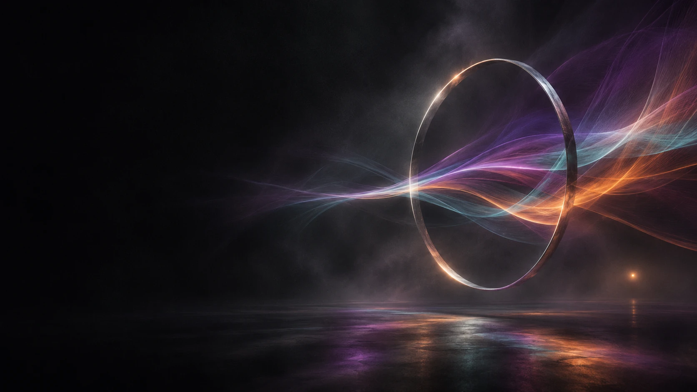
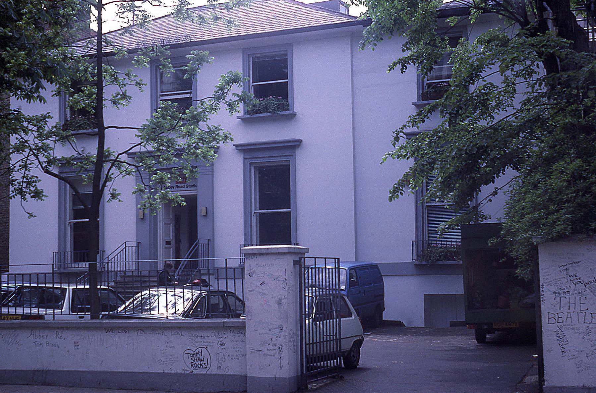
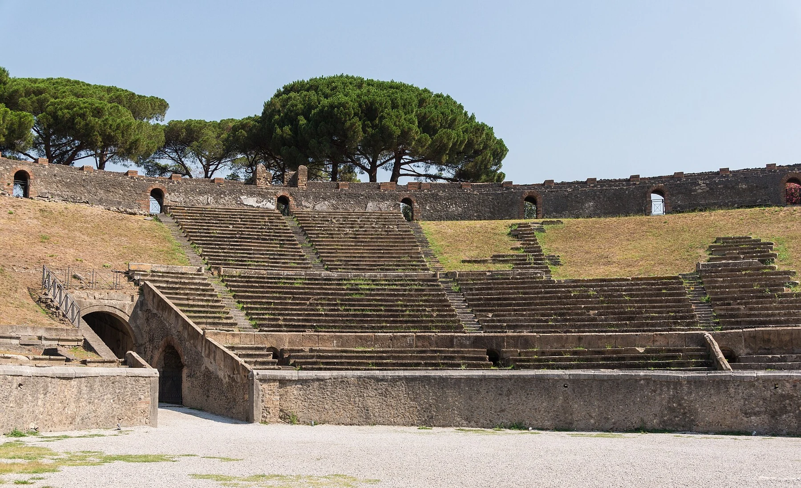
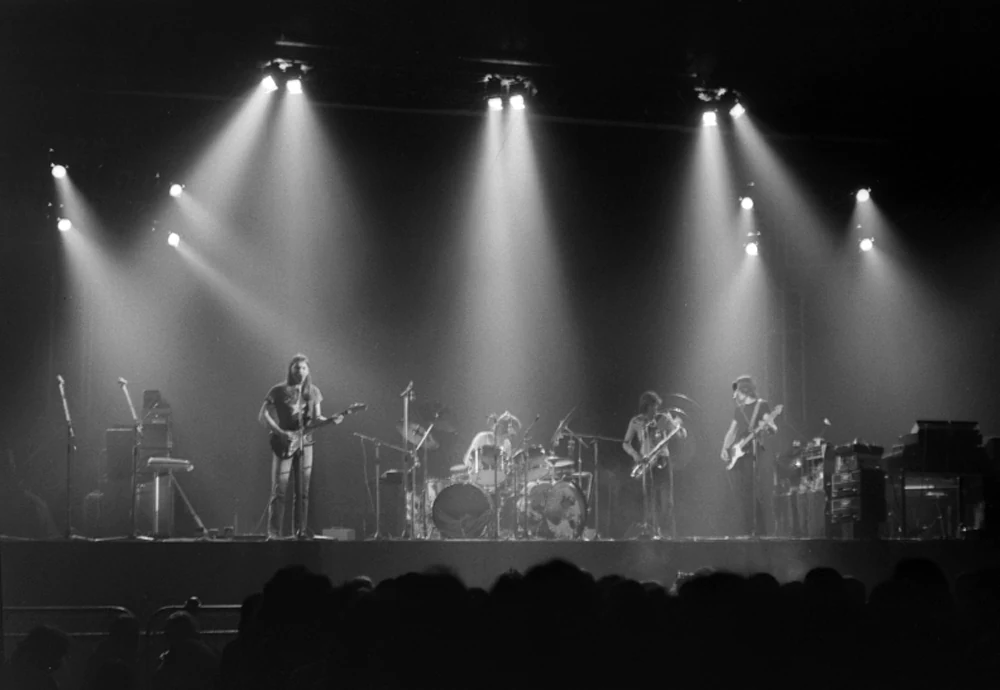
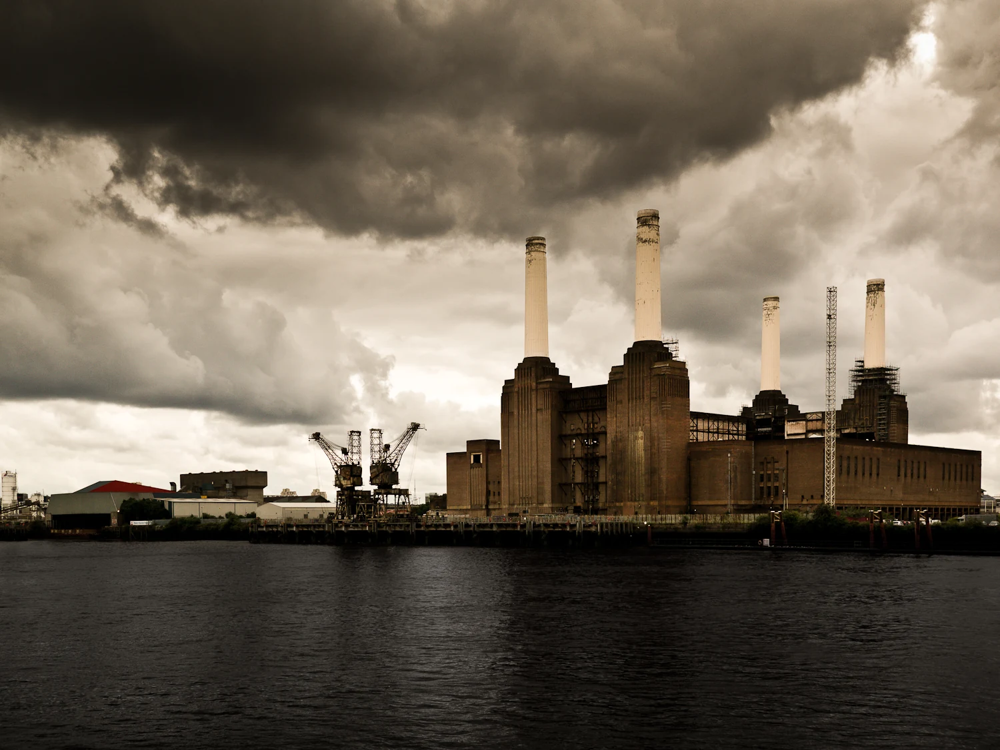
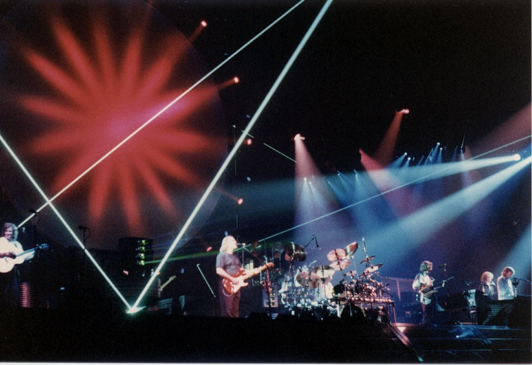
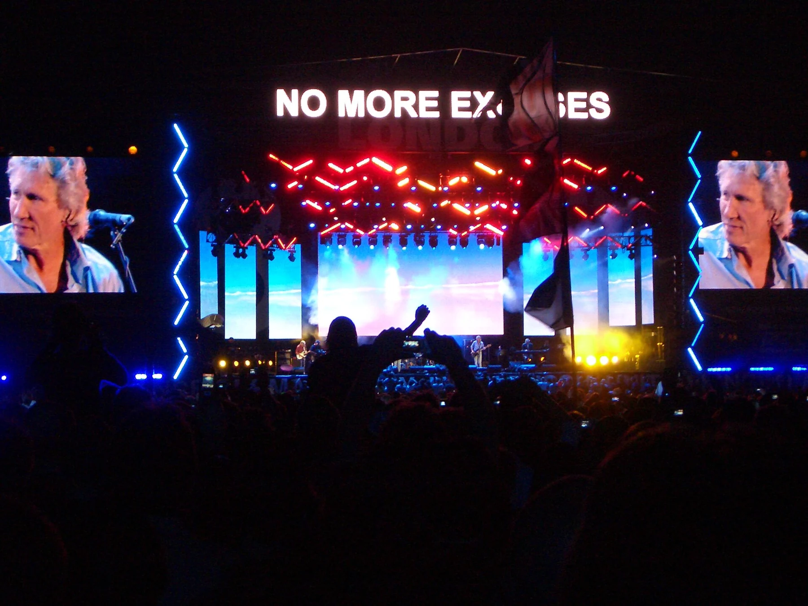
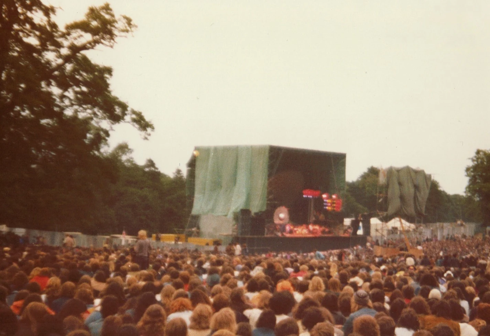
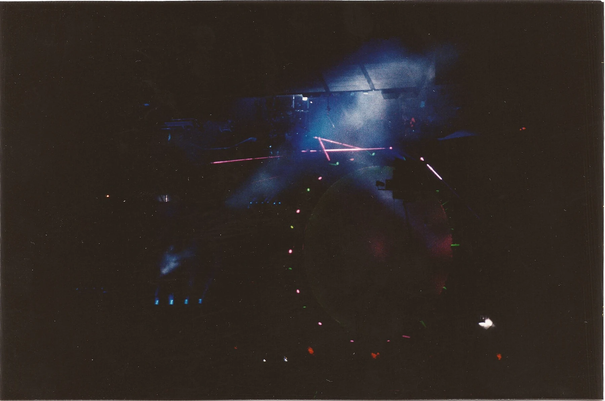
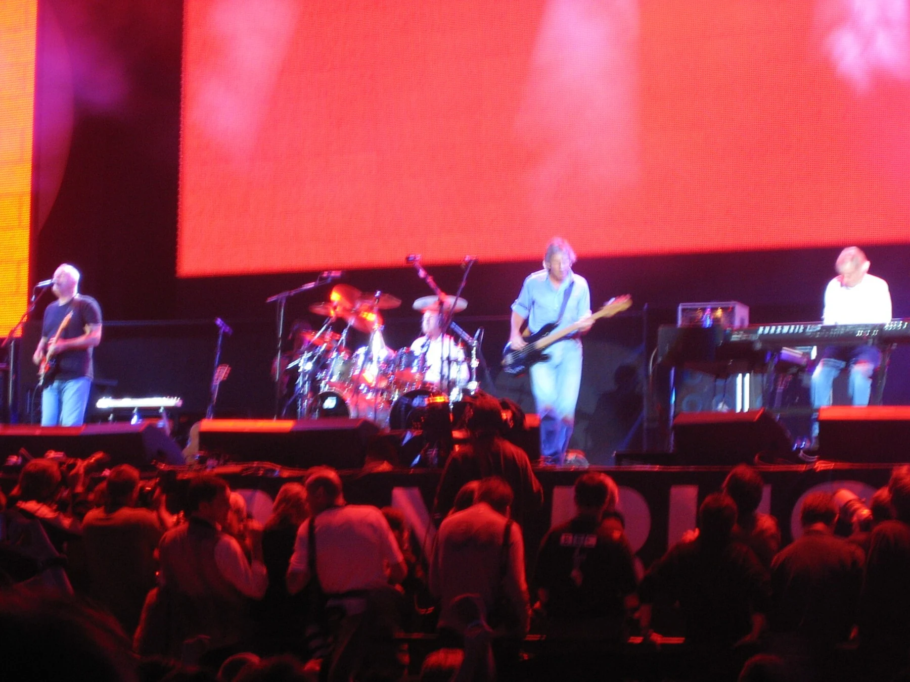

Restored Pompeii · Echoes, Part 1 · excerpt

An independent audiovisual chronicle
Pink
Floyd.
Sound, image & time60 milestones · 15 studio albums · 7 chaptersOriginal cover artwork / AI-generated
A way into the music
From the underground
to the unbounded.
Follow the people, records, performances and visual ideas that changed the shape of Pink Floyd. Move through the whole story, go straight to an album, or settle into a film.
A comprehensive selection of major milestones, with sources attached. Historical photographs keep their real dates. Sound starts only when you choose it.
60sourced moments
in a continuing
musical history.
in a continuing
musical history.
The screening room
See what the music makes.
Three starting points. Ten official selections.
Choose a film; the player is yours to control.
1994 performance · restored PULSE film
Light on a monumental scale.
The Endless River · full film by Ian Emes
An album, reimagined as film.
Explore all 10 official selections +
These are official Pink Floyd uploads. Opening a player connects to YouTube; availability can vary by location. Every selection also has a direct watch link. Cover graphics here are original editorial illustrations.
The studio shelf / 1967–2014
Fifteen records.
Many different worlds.
Select a record to find its place in the story.
These graphic sleeves are an index, not album artwork.
The Piper at the Gates of Dawn1967 ↗A Saucerful of Secrets1968 ↗More1969 ↗Ummagumma1969 ↗Atom Heart Mother1970 ↗Meddle1971 ↗Obscured by Clouds1972 ↗The Dark Side of the Moon1973 ↗Wish You Were Here1975 ↗Animals1977 ↗The Wall1979 ↗The Final Cut1983 ↗A Momentary Lapse of Reason1987 ↗The Division Bell1994 ↗The Endless River2014 ↗
Ummagumma, a live/studio double album, is counted once in the standard fifteen-album sequence. Live albums, compilations and anniversary editions appear in the timeline separately.
The chronology
Seven chapters.
One restless idea.
60 of 60 milestones
Read through 15 November 2026. Dates retain the precision of their sources; most studio-album dates are UK releases.
No matching moments.
Try an album, a musician, a year, or reset the filters.
Chapter 01 / 1965–1968
Light, noise, invention
Start in a room small enough to feel the musicians thinking. These early years move between the immediacy of a single and the freedom of a concert. Songs, light and collective improvisation form a language still being invented, while a change of guitarist turns the story toward a different future.
Listening noteFollow the movement between a three-minute single and a room-filling experiment.

year precision
Beginnings
Pink Floyd takes shape
London brings Syd Barrett, Roger Waters, Richard Wright and Nick Mason into the group that becomes Pink Floyd. Barrett supplies a name drawn from blues musicians Pink Anderson and Floyd Council. Cambridge friendships and the London student music scene form the foundations of a band soon moving beyond its rhythm-and-blues beginnings.
Sources & date notes 01
Formation is a process, not a documented single-day event; this entry deliberately uses year precision.
year precision
Performance
A home in the London underground
Pink Floyd develops its improvisational identity amid London’s underground scene, playing the Marquee’s Spontaneous Underground, London Free School events and the emerging UFO club. Extended music and projected light become parts of one experience. These small rooms establish an approach to performance that later expands into much larger spaces.
Sources & date notes 01
The year groups several related venues and engagements, rather than assigning one opening-night date.
day precision
Single
Arnold Layne reaches the record shops
The UK release of Arnold Layne introduces Syd Barrett’s songwriting to listeners. Recorded at Sound Techniques, it takes Pink Floyd beyond its underground following. The band balances concise pop records with the extended improvisations that distinguish its concerts and identity.
day precision
Performance
Games for May puts sound in motion
At London’s Queen Elizabeth Hall, Games for May places Pink Floyd in a concert-hall setting with a deliberately theatrical presentation. The Azimuth Co-ordinator allows sound to move around the room. The show makes spatial audio and the audience’s physical surroundings central parts of the band’s developing visual and musical language.
Sources & date notes 01
This describes a documented early surround-sound experiment; it does not claim the invention of surround sound.
day precision
Single
See Emily Play becomes a UK hit
See Emily Play is released and reaches number six on the UK singles chart. Barrett’s compact, imaginative pop songwriting brings the group to a wider audience, including television. The single offers another entrance into a band whose stage performances can already stretch far beyond the three-minute format.
Sources & date notes 01
Date is the UK single release, not the date of its chart peak.
day precision
Studio album01 / 15
The Piper at the Gates of Dawn
Pink Floyd’s debut combines Barrett’s concise, eccentric songs with the exploratory spirit of the band’s live improvisations. Recorded with producer Norman Smith, it is the only album to feature Barrett throughout. Its title comes from The Wind in the Willows, placing a literary pastoral image beside the group’s electric experimentation.
Sources & date notes 02
UK release: 4 August 1967. The official chronology dates the differently configured US edition to 21 October 1967.
month precision
Band & people
Five musicians, then a new quartet
David Gilmour joins Pink Floyd, briefly creating a five-piece band with Barrett, Waters, Wright and Mason. The official chronology records the five-piece debut at Aston University on 12 January and a Southampton performance without Barrett on 26 January. The transition changes both the stage lineup and the band’s songwriting balance.
Sources & date notes 01
This card covers the January performing transition. Barrett’s formal separation and management changes unfolded over the following months; it is not a claim that he formally left on 26 January.
day precision
Studio album02 / 15
A Saucerful of Secrets
The second album captures the change from Barrett’s band to the Gilmour, Waters, Wright and Mason quartet. Recordings from both periods sit together, including Barrett’s Jugband Blues. The title piece develops a larger structural approach, while Hipgnosis begins the album-cover relationship that becomes inseparable from Pink Floyd’s visual identity.
Sources & date notes 02
Date is the UK release. Barrett appears on three tracks according to the official album guide.
Chapter 02 / 1969–1972
The stage becomes a studio
Listen for a band learning how to build at greater scale. Film scores, individual experiments and extended group pieces run alongside one another. Concerts become places to test unfinished ideas, and the studio becomes a way to join them. The path toward Dark Side is a process of revision as much as inspiration.
Listening noteListen for the space around the instruments in the Pompeii excerpt.
Chapter sources

day precision
Performance
The Man and The Journey
At the Royal Festival Hall, Pink Floyd presents two extended concert suites, The Man and The Journey. Parts of the music later appear as individual pieces including Grantchester Meadows and Biding My Time. The programme shows the band thinking beyond a succession of songs toward a concert with a larger dramatic progression.
Sources & date notes 01
The date is the Royal Festival Hall presentation recorded in the official chronology.
day precision
Studio album03 / 15
More
The soundtrack for Barbet Schroeder’s film More sends Pink Floyd into music built around dramatic scenes and settings. Short songs and instrumental passages coexist, with the film sometimes placing the music inside the action through radios or other playback devices. Several pieces also find an independent life in the band’s concerts.
Sources & date notes 02
The year-by-year official chronology gives 13 June 1969 for the UK album release. The general biography’s July date is not used.
day precision
Performance
Live music for the moon landing
Pink Floyd supplies live music for the BBC’s television coverage surrounding the first Moon landing. The performance known as Moonhead connects the band’s atmospheric improvisation to an event unfolding in real time. It is a distinctive meeting of experimental rock, broadcasting and the imagery of the space age.
Sources & date notes 01
The official chronology dates the appearance to 20 July; the BBC coverage extended across the night.
day precision
Studio album04 / 15
Ummagumma
Ummagumma divides a double album between live performances and separate studio contributions from each of the four musicians. Concert pieces show the group’s collective power, while the studio record exposes contrasting individual interests. Its hybrid format makes it an unusual entry in the standard sequence of fifteen Pink Floyd studio albums.
Sources & date notes 02
The official chronology dates the UK release to 7 November and the US release to 8 November 1969. This is a live/studio hybrid, counted once in the standard fifteen-album sequence.
day precision
Studio album05 / 15
Atom Heart Mother
A side-long title work brings brass and choir into Pink Floyd’s music, with Ron Geesin helping shape the expanded arrangement. The second side returns to smaller songs and the domestic sounds of Alan’s Psychedelic Breakfast. The record becomes the band’s first UK number-one album, enlarging both its scale and audience.
Sources & date notes 02
UK release: 2 October 1970. Official chronology gives 10 October for the US release.
day precision
Film
Performing inside an empty amphitheatre
Filming begins in the ancient amphitheatre at Pompeii under director Adrian Maben. Pink Floyd performs without a conventional concert audience, letting the musicians, equipment and surrounding ruins carry the images. The encounter between a contemporary electric band and an ancient site becomes one of its defining audiovisual documents.
Sources & date notes 02
Four days of location filming began on 4 October 1971; additional filming took place later in Paris. The film’s premiere belongs to 1972.
day precision
Studio album06 / 15
Meddle
Meddle brings contrasting shorter pieces together with Echoes, which occupies the whole second side. The extended work grows from experiments and fragments developed by the musicians, becoming a demonstration of sustained collective composition. One of These Days gives the album another lasting live centrepiece, built around a very different kind of momentum.
Sources & date notes 02
Date is the UK release. The official chronology dates the US release to 30 October 1971, before the British issue.
day precision
Performance
Dark Side is tested in front of audiences
At Brighton Dome, Pink Floyd attempts an early performance of the suite that will become The Dark Side of the Moon. Equipment trouble interrupts the presentation. The developing work continues through subsequent concerts, giving the musicians a public workshop for material that will change before the finished studio album arrives.
Sources & date notes 02
This was an early work in progress, not playback of the finished 1973 album.
day precision
Studio album07 / 15
Obscured by Clouds
A second collaboration with Barbet Schroeder produces music for La Vallée. Recorded near Paris, Obscured by Clouds favours compact songs and instrumental pieces while Dark Side is still developing onstage and in the studio. The parallel projects show the band moving between film deadlines, concise writing and a larger conceptual work.
Sources & date notes 02
UK release: 2 June 1972. Official chronology gives 17 June for the US release.
day precision
Film
Live at Pompeii reaches the screen
Live at Pompeii premieres at the Edinburgh International Film Festival. Adrian Maben’s film transforms performances recorded the previous year into a cinema experience, making the empty amphitheatre part of the drama. Its release date is separate from the recording dates, a distinction that later restorations make especially useful to preserve.
Sources & date notes 02
Premiere date follows the official chronology. Later versions of the film contain additional material.
Chapter 03 / 1973–1975
The album becomes a world
A record can become a place you enter. In these years, linked songs, sound effects, artwork and live presentation carry an album beyond its individual tracks. Success also creates a new subject: the distance between people, between artists and their work, and between a band and the business surrounding it.
Listening noteTrace the patient entrance of instruments in Shine On You Crazy Diamond.

month precision
Studio album08 / 15
The Dark Side of the Moon
After a year of live development, The Dark Side of the Moon links songs, voices and sound effects around everyday pressures: time, work, money and mortality. Engineer Alan Parsons and vocalist Clare Torry are among its important collaborators. The prism sleeve, credited to Hipgnosis and George Hardie, gives the studio experience an equally concentrated visual identity.
Sources & date notes 02
Month precision is intentional. The official album guide says March 1973; specific release days differ between retrospective accounts and markets.
month precision
In the studio
An album imagined from household sounds
Pink Floyd explores a project known as Household Objects, using everyday items as musical sources. The sessions with Alan Parsons test how far the band might push the studio after Dark Side. The proposed album does not emerge as planned, but the experiment belongs to the same history of treating sound itself as composition.
Sources & date notes 02
The chronology gives 1 October as a session date; this broader project card uses month precision.
month precision
Visual design
The circular screen enters the show
The French tour introduces Pink Floyd’s circular projection screen, giving films and images a strong architectural place above the musicians. New material also appears onstage, including Shine On You Crazy Diamond and Raving and Drooling. During the year, touring becomes a workshop for music that will feed more than one future album.
Sources & date notes 01
The official chronology dates the start of this French tour to 18 June 1974. The screen and developing songs are grouped as a tour milestone.
day precision
Studio album09 / 15
Wish You Were Here
Wish You Were Here explores absence and the pressures of the music business, with the Barrett tribute Shine On You Crazy Diamond framing the record. The band builds an emotional world around spacious playing and uneasy relationships. Hipgnosis extends those ideas into the artwork, making absence a visual theme as well as a musical one.
Sources & date notes 02
UK release: 12 September 1975; the official chronology gives 13 September for the US. No precise date is assigned here to Barrett’s unannounced studio visit.
Chapter 04 / 1976–1983
Spectacle and fracture
Here, the spectacle and its tensions become the subject. Social criticism moves into a story about a performer’s isolation, and that story is rebuilt as a record, a stage production and a film. The closing chapter turns toward war and remembrance, as the band’s creative relationships grow increasingly difficult.
Listening noteCompare the compact single with the larger album and theatrical sequence.

day precision
Visual design
A pig above Battersea
The Animals cover shoot places an inflatable pig above Battersea Power Station. Across several days, weather, photographic choices and an escaped balloon complicate the plan. The resulting cover combines images from different moments, showing how a carefully constructed photograph can become as memorable as the music it is designed to introduce.
Sources & date notes 01
Shoot ran 2–4 December 1976. The official account places the escape on the second day and describes a composite final image.
day precision
Studio album10 / 15
Animals
Animals turns long-form music toward a sharp social allegory influenced by George Orwell’s Animal Farm. Earlier live pieces are transformed into Dogs and Sheep, joined by Pigs (Three Different Ones) and the shorter Pigs on the Wing. The record gives the band’s mid-seventies experiments a more confrontational political focus.
Sources & date notes 02
UK release: 21 January 1977. Official chronology gives 12 February for the US release.
day precision
Performance
The stadium and the imagined wall
The In the Flesh tour ends in Montreal amid a strained relationship between performer and audience. Waters’ response to the experience helps generate the idea of a barrier separating a rock band from its listeners. The Wall develops from that image into a much broader story about isolation and the forces that create it.
Sources & date notes 02
This links a documented concert to Waters’ subsequent concept; it does not reduce the entire album to a single incident.
month precision
In the studio
The Wall begins taking shape
Waters begins demoing ideas for The Wall and The Pros and Cons of Hitch Hiking at Britannia Row. The projects eventually take different paths, as a Pink Floyd album and a Waters solo album. Gilmour and Wright also issue solo records in 1978, making the musicians’ individual creative interests increasingly visible.
Sources & date notes 01
Month refers to the demo work described in the official chronology, not to both solo-album release dates.
day precision
Single
Another Brick in the Wall, Part 2
Another Brick in the Wall, Part 2 becomes Pink Floyd’s first UK single release since 1968. Its arrival shortly before The Wall brings one part of a sprawling concept album into the pop charts. The record reaches number one in Britain, making the band highly visible in a format it had largely set aside.
Sources & date notes 01
Date is the UK single release, not the chart-peak date.
day precision
Studio album11 / 15
The Wall
The Wall follows the fictional rock star Pink through a story of injury, withdrawal and confrontation. Waters’ concept becomes a double album produced with David Gilmour and Bob Ezrin, while Gerald Scarfe supplies its distinctive visual vocabulary. The work is designed to expand beyond records into an unusually integrated stage production and film.
Sources & date notes 02
UK release: 30 November 1979. The official chronology gives 8 December for the US release.
day precision
Performance
The Wall becomes a physical concert
The first Wall concerts open in Los Angeles. A structure assembled during the performance turns the album’s central metaphor into a visible barrier between musicians and audience. Music, projection and stage action operate together, bringing Pink Floyd’s long interest in concert environments to an especially literal and elaborate form.
Sources & date notes 01
This is the opening of the original Pink Floyd production; subsequent Waters productions are separate events.
day precision
Film
The Wall premieres at Cannes
Alan Parker’s film of The Wall premieres at Cannes, with a screenplay by Roger Waters and Bob Geldof in the central role. Cinema gives the story another life after the album and concerts. The project carries Pink Floyd’s music and visual world across three distinct forms, each with its own way of presenting the narrative.
Sources & date notes 02
Date follows the official chronology’s Cannes premiere entry, not the later commercial cinema opening.
day precision
Studio album12 / 15
The Final Cut
The Final Cut develops from proposed Wall-related material into an album shaped by the Falklands War, remembrance and contemporary politics. Richard Wright is absent from the recording lineup. It is the last Pink Floyd album with Roger Waters, whose anti-war writing and tribute to his father give the record its unusually personal focus.
Sources & date notes 03
UK release: 21 March 1983; official chronology gives 2 April for the US. The band did not tour this album.
Chapter 05 / 1985–1995
Rebuilding the band
How does a band continue after one of its defining writers leaves? This chapter follows the answer through new records and an expanded live ensemble. The emphasis moves between rebuilding a musical identity and presenting a shared catalogue at great scale, with performance becoming a crucial part of the later band’s story.
Listening noteIn PULSE, watch how a solo and the lighting build their arc together.

year precision
Band & people
Waters leaves; the name is disputed
Roger Waters leaves Pink Floyd, while David Gilmour and Nick Mason decide to continue. The disagreement over the band’s future leads to a dispute about the use of its name. A later agreement permits Pink Floyd to continue with Gilmour and Mason, while Waters pursues his separate work and performances.
Sources & date notes 02
Year precision is intentional: the official retrospective dates the announcement to October, while other accounts use December. The later settlement is described without an unsupported precise signing date.
day precision
Studio album13 / 15
A Momentary Lapse of Reason
Gilmour and Mason bring Pink Floyd back to record-making with A Momentary Lapse of Reason, produced by Gilmour and Bob Ezrin. The collection moves away from a single overarching narrative toward songs with different subjects. Its release opens a new chapter for the band after Waters’ departure and the uncertainty that followed.
Sources & date notes 02
UK release: 7 September 1987. Official chronology gives 8 September for the US.
day precision
Performance
Pink Floyd returns to the road
The new world tour opens in Ottawa, following rehearsals in Toronto. Richard Wright returns to the live band alongside Gilmour and Mason, with an expanded supporting ensemble. The concerts place the new album beside earlier Pink Floyd music, establishing continuity through performance while the group is rebuilding its recording identity.
Sources & date notes 01
Wright’s return to the touring lineup should not be read as a precise statement about the date or terms of his legal membership.
day precision
Live album
Delicate Sound of Thunder
Delicate Sound of Thunder documents the revived touring band, drawing on performances at Nassau Coliseum in New York. The live release brings new material and established songs into the same record. It becomes an important document of the Gilmour-led concert era, distinct from the studio album that helped launch it.
Sources & date notes 01
Official chronology gives 21 November 1988 for both UK and US album release. This is a live album, outside the fifteen studio albums.
day precision
Performance
A concert on the water in Venice
Pink Floyd performs from a floating stage in Venice, with the city itself becoming the setting for a broadcast concert. The ninety-minute show reaches television audiences in more than twenty countries. It extends the band’s concern with place and spectacle into a large public event beyond a conventional arena stage.
day precision
Performance
Knebworth for the Silver Clef charities
Pink Floyd joins the major charity concert at Knebworth, bringing the Gilmour, Mason and Wright performing era to another prominent outdoor setting. The appearance connects the band to a wider gathering of British rock musicians. Its music later reappears through archive releases, giving this one-day event a longer recorded life.
Sources & date notes 02
This was a Pink Floyd appearance; it is separate from Waters’ Berlin Wall production the following month.
day precision
Related solo project
Waters stages The Wall in Berlin
Roger Waters presents The Wall in Berlin with guest performers after the opening of the Berlin Wall. The staging gives the work’s central image a new historical setting. This is a Waters-led charity production, extending the project’s life outside Pink Floyd rather than marking a reunion of the band.
Sources & date notes 01
Included as a major related project. Credit is Roger Waters and guests, not Pink Floyd.
day precision
Studio album14 / 15
The Division Bell
The Division Bell grows from renewed studio work by Gilmour, Mason and Wright, with Wright again playing a substantial creative role. Communication runs through the songs, and Polly Samson contributes lyrics. The album presents a more collective later-period sound and supplies the material for another large international tour.
Sources & date notes 02
Date is the UK release. The official chronology gives 4 April for the US; other catalogues differ, so the primary display is explicitly UK.
day precision
Performance
The Division Bell tour
The tour begins in Miami and carries an expanded band through North America, Europe and a run at London’s Earls Court. New songs sit beside music from across Pink Floyd’s catalogue. Some London performances include The Dark Side of the Moon in full, providing the performances later preserved in PULSE.
Sources & date notes 02
Date marks the tour opening. The chronology describes the Earls Court run in October; no unsupported exact final-show date is added here.
day precision
Live album
PULSE preserves the 1994 show
PULSE turns the previous year’s tour into a live album, followed by its concert video. The release includes a complete performance of The Dark Side of the Moon alongside songs from other periods. Even the original packaging participates in the presentation, using a blinking light to give the object a visible pulse.
Sources & date notes 01
Official chronology gives 5 June 1995 for the album in the UK and US; the video follows one week later. This is a live release, outside the fifteen studio albums.
Chapter 06 / 1996–2008
Reunions and remembrance
Some of the most charged moments are brief. An induction, a benefit appearance and the return of familiar musicians can carry more weight than their duration suggests. This chapter moves from public recognition to reunion and remembrance, asking how a band’s work changes in meaning when its creators can no longer all share a stage.
Listening noteWatch the musicians sharing the Live 8 stage, then hear the familiar song anew.

day precision
Recognition
Recognition at the Rock and Roll Hall of Fame
Pink Floyd is inducted into the Rock and Roll Hall of Fame. David Gilmour and Richard Wright attend and perform with Billy Corgan, placing the band’s music in a public celebration of its influence. The occasion follows the major touring years without announcing a new Pink Floyd studio project.
Sources & date notes 01
This is an induction and guest performance, not a reunion of the full classic quartet.
day precision
Performance
The four reunite for Live 8
Gilmour, Waters, Wright and Mason share the stage at Live 8 in London’s Hyde Park. Their brief set brings together music from Dark Side, Wish You Were Here and The Wall. The reunion becomes a major public moment in the band’s history, while remaining a specific benefit appearance rather than the start of a new album cycle.
Sources & date notes 01
Lineup: David Gilmour, Roger Waters, Richard Wright and Nick Mason.
day precision
Remembrance
Remembering Syd Barrett
Syd Barrett dies in Cambridge. His work with Pink Floyd had been brief but foundational: the early singles and most of The Piper at the Gates of Dawn established a distinctive songwriting imagination. His death invites renewed attention to that music and to the separate life of an artist often overshadowed by his legend.
Sources & date notes 02
The entry avoids speculation about diagnoses, causes or personal circumstances beyond the verified date and place.
day precision
Remembrance
Remembering Richard Wright
Richard Wright dies, closing the possibility of another reunion of the four musicians who performed at Live 8. His keyboard playing and compositional contributions run through the band’s central periods. Material he recorded with Gilmour and Mason during the Division Bell era later becomes the foundation of The Endless River.
Sources & date notes 02
The later connection to The Endless River is documented in the official album guide.
Chapter 07 / 2011–2026
The archive keeps moving
The story continues through the care taken with what survives. Studio fragments become an album, early films become clearer, and old recordings are heard in new arrangements and spatial mixes. A new charitable single also interrupts the archival rhythm. Follow the dates carefully: an original performance, a restoration and an anniversary release belong to different moments.
Listening noteLet the Ian Emes film show another way of placing images beside an album.

day precision
Related solo project
A brief meeting during Waters’ Wall tour
At London’s O2, David Gilmour joins Roger Waters for Comfortably Numb during Waters’ touring production of The Wall. Nick Mason also appears for the closing performance of Outside the Wall. The encounter brings three surviving members together within a Waters concert, without presenting the event as a full Pink Floyd reunion.
Sources & date notes 01
Credit: Roger Waters’ The Wall production, with guests David Gilmour and Nick Mason.
day precision
Archive & restoration
Why Pink Floyd? opens the archive
The Why Pink Floyd? reissue programme offers several ways into the catalogue, from remastered albums to expanded sets with additional recordings and presentation material. Its Discovery, Experience and Immersion editions make the archive itself a major project. Later releases continue this practice of revisiting familiar albums through alternate versions, live performances and new mixes.
Sources & date notes 01
Date marks the first phase of the campaign; individual expanded releases followed on different dates.
day precision
Studio album15 / 15
The Endless River
Gilmour and Mason revisit largely instrumental material recorded with Wright during the Division Bell sessions. Assisted by producers and engineers including Phil Manzanera, they shape it into The Endless River, a tribute to Wright. The mostly instrumental album closes with Louder Than Words, whose lyrics were written by Polly Samson.
Sources & date notes 02
Date follows the official chronology. Its foundations are recordings from the 1993 Division Bell sessions, developed further in 2013–14; this is not a wholly new 2014 band session.
day precision
Archive & restoration
The Early Years 1965–1972
The Early Years gathers recordings, television appearances, films and other material from the band’s first period into a large archival collection. Previously unreleased tracks and live documents expand the picture beyond the original albums. Its combination of audio, moving images and reproduced objects makes the early years available as a connected audiovisual history.
Sources & date notes 01
This is an archival box set, not a new studio album.
day precision
Exhibition
Their Mortal Remains at the V&A
The Victoria and Albert Museum opens Their Mortal Remains, an exhibition bringing Pink Floyd’s sound, design, equipment and personal artefacts into a museum setting. The visitor moves through the career as an audiovisual experience. The exhibition treats the group’s visual collaborators and presentation methods as part of the musical story.
Sources & date notes 01
The V&A records the London run as 13 May–15 October 2017.
day precision
Related solo project
Nick Mason revisits the early music
Nick Mason’s Saucerful of Secrets makes its first public appearance at Dingwalls in London, followed by smaller shows at the Half Moon. The new band concentrates on Pink Floyd material from 1967 to 1972. Its concerts return this repertoire to an intimate live setting under the direction of a founding member.
Sources & date notes 01
A separate band led by Nick Mason; this is not a Pink Floyd reunion.
day precision
Archive & restoration
The Later Years
The Later Years revisits Pink Floyd’s work from 1987 onward through remixes, live recordings, films and previously unreleased material. The collection includes a revised A Momentary Lapse of Reason and documents later concerts. It complements the earlier archival project by giving the Gilmour, Mason and Wright era a comparable expanded presentation.
Sources & date notes 01
The full set was released on 13 December 2019; a separate highlights release appeared on 29 November.
day precision
Single
Hey Hey Rise Up
Gilmour and Mason release Hey Hey Rise Up under the Pink Floyd name in support of Ukraine. They are joined by Guy Pratt and Nitin Sawhney, using a vocal performance by Ukrainian singer Andriy Khlyvnyuk. The recording is a new collaboration for a specific cause, separate from the band’s ongoing archival releases.
Sources & date notes 01
Recorded on 30 March 2022; digital release followed on 8 April. Waters is not a performer on this recording. No lyrics are reproduced.
day precision
Archive & restoration
Animals 2018 Remix is released
James Guthrie’s remix of Animals receives its main release in 2022, despite the year 2018 in the edition’s title. Stereo and surround presentations offer different ways to hear the 1977 recordings, accompanied by revised artwork. The distinction between recording year, mix year and release year matters to this part of the story.
Sources & date notes 01
Individual editions: 16 September 2022. The deluxe gatefold followed on 7 October. The original studio album remains the 1977 release.
day precision
Archive & restoration
Dark Side at fifty
The Dark Side of the Moon’s fiftieth anniversary brings a new remaster, an Atmos mix and a wider presentation of the archive. The 1974 Wembley performance also receives a standalone album release. The anniversary connects the original studio work to its touring history and to later developments in spatial listening.
Sources & date notes 01
The dated release-day news entry confirms 24 March 2023. The newer album landing page’s May 2023 metadata is not used. This entry concerns the band’s anniversary editions, not Roger Waters’ separate Redux recording.
day precision
Archive & restoration
Pompeii restored for cinema and immersive sound
The restored Pink Floyd at Pompeii – MCMLXXII returns to cinemas, with restored film and new audio mixes by Steven Wilson. Stereo, 5.1 and Atmos versions reconnect the 1971 performances with contemporary presentation. The soundtrack and home-video editions follow in May, keeping the performance date, film history and restoration clearly distinct.
Sources & date notes 02
- Pink Floyd at Pompeii – MCMLXXII: remix and release details
- Pink Floyd at Pompeii – MCMLXXII: official album guide
Cinema and IMAX release from 24 April 2025; soundtrack and Blu-ray release on 2 May 2025. This is a restoration of historical performances.
day precision
Archive & restoration
Wish You Were Here at fifty
Wish You Were Here 50 expands the album’s history through alternate recordings, demos and a new spatial presentation. The anniversary programme also commissions contemporary visual responses, extending the relationship between the music and its imagery. These editions revisit the 1975 work and its making; they do not constitute a new Pink Floyd studio album.
Sources & date notes 01
The dated release-day announcement confirms 12 December 2025. The official album landing page’s September 2025 metadata is not used.
day precision
Archive & restoration
8-Tracks reshapes the seventies sequence
The official 8-Tracks compilation gathers music from the 1971–1979 period into a continuous sequence edited by Steven Wilson. It includes the longer Pigs on the Wing version previously associated with the original Animals eight-track cartridge. The project provides a newly arranged route through existing recordings rather than adding another studio album.
Sources & date notes 01
The official announcement gives 5 June 2026 for the general release. A Sony US vinyl-store listing gives 4 September for its product, indicating a format or market variation.
month precision
Archive & restoration
Echoes and Crystal Voyager restored
Restored footage of George Greenough’s Echoes sequence from the 1973 film Crystal Voyager appears through Pink Floyd’s official channel. The closing surf-film sequence had also been used in the band’s live projections. Its return reveals another branch of the music’s visual life, connecting early camera experiments in the water with present-day restoration.
Sources & date notes 01
Month precision reflects a source discrepancy: the page is dated 16 October 2026, while its press-release body says 15 October. This is restored 1973 film material, not a newly filmed Pink Floyd performance.
day precision
Announcement
Animals 50 is announced for 2027
Announced · release scheduled for 2027Pink Floyd announces Animals 50, scheduled for 22 January 2027. The proposed editions combine the original album with rarities, later mixes and a recording of the Oakland concert from May 1977. At this timeline’s November 2026 cutoff, the announcement has happened; the anniversary release remains a future event.
Sources & date notes 01
Do not label the 2027 release as already available. The official announcement is dated 5 November 2026. Availability and contents should be rechecked after release.
The photographic record
Images with a history.
Nine licensed photographs, with dates, creators and links to the originals. Venue photographs are labelled as context.
Open the complete photograph collection 09


Sources, credits & editorial notes
A history you can trace.
Researched to 15 November 2026.
Independent of Pink Floyd and its rights holders.
What the dates mean
Dates preserve the precision supported by the cited sources. Studio album cards normally use the UK release date; differing US dates are explicitly noted. Month/year values are not shorthand for the first day.
This is a selection of major band milestones, not every concert, recording session or solo release. Related solo projects are identified explicitly. The 2027 release is an announcement as of the research date.
What you see and hear
Photographs retain their documented dates and credits. Display copies are resized and re-encoded; no historical scene is generated. The abstract cover was made with AI for this edition. Graphic sleeves and screening posters are original index illustrations.
Recordings remain with their official provider. No player loads on arrival, and there is no autoplay. Motion can be paused; reduced-motion preferences are respected.
Primary-source bibliography 59
- Pink Floyd: official biographyPink Floyd / Sony Music Entertainment · checked 2026-11-15
- Official chronology: 1967Pink Floyd / Sony Music Entertainment · checked 2026-11-15
- Official chronology: 1968Pink Floyd / Sony Music Entertainment · checked 2026-11-15
- Official chronology: 1969Pink Floyd / Sony Music Entertainment · checked 2026-11-15
- Official chronology: 1970Pink Floyd / Sony Music Entertainment · checked 2026-11-15
- Official chronology: 1971Pink Floyd / Sony Music Entertainment · checked 2026-11-15
- Official chronology: 1972Pink Floyd / Sony Music Entertainment · checked 2026-11-15
- Official chronology: 1973Pink Floyd / Sony Music Entertainment · checked 2026-11-15
- Official chronology: 1974Pink Floyd / Sony Music Entertainment · checked 2026-11-15
- Official chronology: 1975Pink Floyd / Sony Music Entertainment · checked 2026-11-15
- Official chronology: 1976Pink Floyd / Sony Music Entertainment · checked 2026-11-15
- Official chronology: 1977Pink Floyd / Sony Music Entertainment · checked 2026-11-15
- Official chronology: 1978Pink Floyd / Sony Music Entertainment · checked 2026-11-15
- Official chronology: 1979Pink Floyd / Sony Music Entertainment · checked 2026-11-15
- Official chronology: 1980Pink Floyd / Sony Music Entertainment · checked 2026-11-15
- Official chronology: 1982Pink Floyd / Sony Music Entertainment · checked 2026-11-15
- Official chronology: 1983Pink Floyd / Sony Music Entertainment · checked 2026-11-15
- Official chronology: 1985Pink Floyd / Sony Music Entertainment · checked 2026-11-15
- Official chronology: 1987Pink Floyd / Sony Music Entertainment · checked 2026-11-15
- Official chronology: 1988Pink Floyd / Sony Music Entertainment · checked 2026-11-15
- Official chronology: 1989Pink Floyd / Sony Music Entertainment · checked 2026-11-15
- Official chronology: 1990Pink Floyd / Sony Music Entertainment · checked 2026-11-15
- Official chronology: 1994Pink Floyd / Sony Music Entertainment · checked 2026-11-15
- Official chronology: 1995Pink Floyd / Sony Music Entertainment · checked 2026-11-15
- Official chronology: 1996Pink Floyd / Sony Music Entertainment · checked 2026-11-15
- Official chronology: 2005Pink Floyd / Sony Music Entertainment · checked 2026-11-15
- Official chronology: 2006Pink Floyd / Sony Music Entertainment · checked 2026-11-15
- Official chronology: 2008Pink Floyd / Sony Music Entertainment · checked 2026-11-15
- Official chronology: 2011Pink Floyd / Sony Music Entertainment · checked 2026-11-15
- Official chronology: 2014Pink Floyd / Sony Music Entertainment · checked 2026-11-15
- Official chronology: 2018Pink Floyd / Sony Music Entertainment · checked 2026-11-15
- Official chronology: 2019Pink Floyd / Sony Music Entertainment · checked 2026-11-15
- Official album guide: The Piper at the Gates of DawnPink Floyd / Sony Music Entertainment · checked 2026-11-15
- Official album guide: A Saucerful of SecretsPink Floyd / Sony Music Entertainment · checked 2026-11-15
- Official album guide: MorePink Floyd / Sony Music Entertainment · checked 2026-11-15
- Official album guide: UmmagummaPink Floyd / Sony Music Entertainment · checked 2026-11-15
- Official album guide: Atom Heart MotherPink Floyd / Sony Music Entertainment · checked 2026-11-15
- Official album guide: MeddlePink Floyd / Sony Music Entertainment · checked 2026-11-15
- Official album guide: Obscured by CloudsPink Floyd / Sony Music Entertainment · checked 2026-11-15
- Official album guide: The Dark Side of the MoonPink Floyd / Sony Music Entertainment · checked 2026-11-15
- Official album guide: Wish You Were HerePink Floyd / Sony Music Entertainment · checked 2026-11-15
- Official album guide: AnimalsPink Floyd / Sony Music Entertainment · checked 2026-11-15
- Official album guide: The WallPink Floyd / Sony Music Entertainment · checked 2026-11-15
- Official album guide: The Final CutPink Floyd / Sony Music Entertainment · checked 2026-11-15
- Official album guide: A Momentary Lapse of ReasonPink Floyd / Sony Music Entertainment · checked 2026-11-15
- Official album guide: The Division BellPink Floyd / Sony Music Entertainment · checked 2026-11-15
- Official album guide: The Endless RiverPink Floyd / Sony Music Entertainment · checked 2026-11-15
- The Early Years 1965–1972: official release announcementPink Floyd / Sony Music Entertainment · checked 2026-11-15
- Inside the Pink Floyd: Their Mortal Remains exhibitionVictoria and Albert Museum · checked 2026-11-15
- Official news archive: Hey Hey Rise Up and Dark Side 50 release announcementsPink Floyd / Sony Music Entertainment · checked 2026-11-15
- Animals 2018 Remix: release announcementSony Music Canada · checked 2026-11-15
- Pink Floyd at Pompeii – MCMLXXII: remix and release detailsSteven Wilson · checked 2026-11-15
- Pink Floyd at Pompeii – MCMLXXII: official album guidePink Floyd / Sony Music Entertainment · checked 2026-11-15
- Wish You Were Here 50: release-day press announcementShore Fire Media for Legacy Recordings / Sony Music · checked 2026-11-15
- Pink Floyd announce 8-TracksPink Floyd / Sony Music Entertainment · checked 2026-11-15
- Newly restored Echoes footage from Crystal VoyagerPink Floyd / Sony Music Entertainment · checked 2026-11-15
- Pink Floyd announce Animals 50Pink Floyd / Sony Music Entertainment · checked 2026-11-15
- The Dark Side of the Moon studio documentsAbbey Road Studios · checked 2026-11-15
- The Wall: 1982 festival record and creditsFestival de Cannes · checked 2026-11-15
Photograph credits & licences 09
- Studio context — Barry Shimmon · CC BY-SA 2.0Abbey Road Studios, photographed on 29 May 1987. A view of the recording location; this is not a photograph of the 1960s or 1970s sessions. Display copy resized and re-encoded as WebP; original linked.
- Pompeii context — Jebulon · CC0The amphitheatre at Pompeii, photographed on 21 July 2015. The setting of the 1971 film shoot, shown more than four decades later. Display copy resized and re-encoded as WebP; original linked.
- The Dark Side of the Moon on stage — TimDuncan · CC BY 3.0Pink Floyd performing The Dark Side of the Moon at Earls Court, London, 18 May 1973. Left to right in this frame: David Gilmour, Nick Mason, Dick Parry and Roger Waters. Display copy resized and re-encoded as WebP; original linked.
- Knebworth, 1975 — Richard Humphrey · CC BY-SA 2.0The crowd and Pink Floyd stage at Knebworth on 5 July 1975. Display copy resized and re-encoded as WebP; original linked.
- Animals location context — Scott Wylie from UK · CC BY 2.0Battersea Power Station, photographed on 7 July 2012. A later view of the building associated with Animals; this is not the 1976 album-cover photograph. Display copy resized and re-encoded as WebP; original linked.
- A Momentary Lapse of Reason tour — Bradley Fortner · CC0Tour lighting in Toronto, 1987. Wikimedia source metadata dates this photograph 8 September; it does not document the public tour opening in Ottawa. Display copy resized and re-encoded as WebP; original linked.
- Docklands, 1989 — Paul Carless · CC BY 2.0Pink Floyd performing at Docklands Arena, London, in 1989. The source identifies the year, not an exact day. Display copy resized and re-encoded as WebP; original linked.
- Live 8 reunion — Jon Lean from Bristol, United Kingdom · CC BY-SA 2.0Pink Floyd at Live 8 in Hyde Park, London, on 2 July 2005. The audience, concert stage and Roger Waters on the side screens are visible. Display copy resized and re-encoded as WebP; original linked.
- Live 8 reunion — closer view — Dave Bushe from London · CC BY 2.0David Gilmour, Nick Mason, Roger Waters and Richard Wright on stage at Live 8, London, 2 July 2005. An audience photograph with visible motion blur. Display copy resized and re-encoded as WebP; original linked.
Any adaptations of ShareAlike photographs remain under their respective licence. Creator and rights-holder names identify sources; they do not imply endorsement.
2026 restored Echoes / Crystal Voyager film ↗
The official announcement is included in the timeline. Its video link did not return playable embed metadata during research, so it is not included among the ten embedded selections.
Read the official announcement